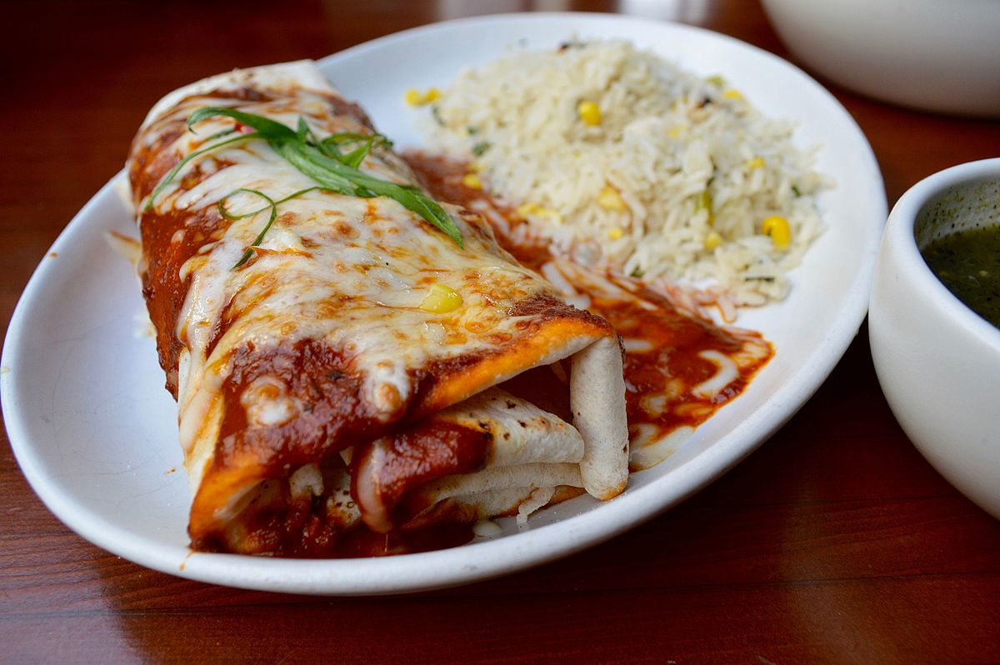

mijn burrito recept
Een burrito is een Mexicaans gerecht dat zijn oorsprong heeft in het noorden van Mexico of zuidwesten van de Verenigde Staten van Amerika.
Deze delicatesse van de Mexicaanse cultuur bestaat uit een tortilla, vervaardigd uit tarwebloem, meestal gevuld met bonen en vlees
(meestal gehakt of kip, soms ook kaas), en opgerold zodat de vulling binnenin de tortilla zit.
De naam "burrito" komt van het Spaanse burro, hetgeen ezel betekent. Een burrito is dus een ezeltje.

VOOR 4 PERSONEN
- 8 grote tortilla’s (of 12 kleine)
- 500 gram gehakt
- 2 paprika’s
- zakje Mexicaanse kruiden
- 125 gram zure room
- geraspte kaas
BEREIDING
Rul het gehakt en snij ondertussen de paprika’s fijn. Als het gehakt bijna gaar is, voeg je paprika en kruiden toe.
Roer regelmatig door en laat zo nog een paar minuutjes pruttelen.
Ondertussen smeer je de tortilla’s in met een beetje zure room.
Verdeel het gehaktmengsel over de tortilla’s, doe er ook een beetje geraspte kaas in. vouw ze dicht en leg ze in een ovenschaal.
Strooi er een beetje geraspte kaas overheen en schuif de ovenschaal in de oven.
Bak de burrito’s in 10-12 minuten op 200 graden (hete lucht oven).
BRONNEN
wiki Burrito